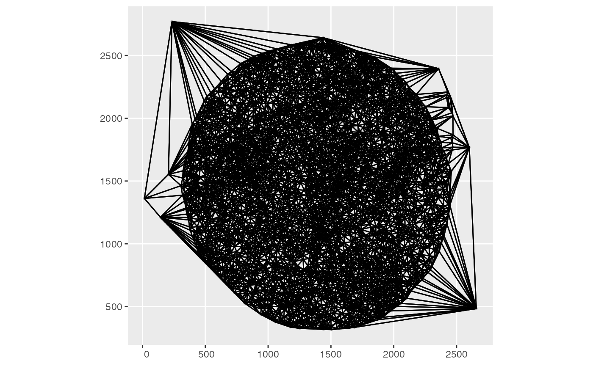
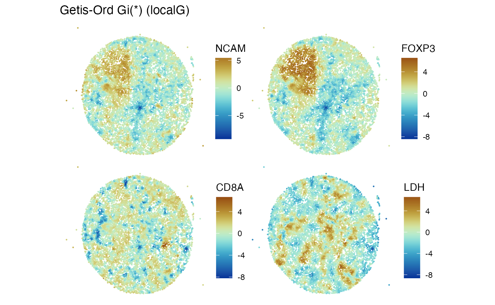

GBCC.mcm overview
Vincent J. Carey, stvjc at channing.harvard.edu
May 05, 2025
Source:vignettes/GBCC.mcm.Rmd
GBCC.mcm.RmdIntroduction
This package illustrates use of MCMICRO spatial proteomics data.
As of Feb 1 2025, some of the code used to produce this vignette is in github.com, not in Bioconductor or CRAN.
Data availability
Data in the form of h5ad files were supplied by Jeremy Goecks. These were ingested and transformed to SpatialFeatureExperiment instances using the process_mcmicro function in the GBCC.mcm package.

Schematic for SFE by Lambda Moses
The SpatialFeatureExperiment (SFE) instances were serialized using alabaster.sfe, and the folders zipped and placed on NSF Open Storage Network. We retrieve, cache, and deserialize using the following code.
library(GBCC.mcm)
library(alabaster.sfe)
library(Voyager)
pa = path_to_zipped_mcm("m62.1")
tf = tempfile()
unzip(pa, exdir=tf)
targ = dir(tf, full=TRUE)
m62.1 = readObject(targ)
m62.1## class: SpatialFeatureExperiment
## dim: 30 8577
## metadata(1): all_markers
## assays(1): X
## rownames(30): AF488 AF555 ... CD1B CD8A
## rowData names(0):
## colnames(8577): 1 2 ... 8576 8577
## colData names(12): X_centroid Y_centroid ... phenotype sample_id
## reducedDimNames(0):
## mainExpName: NULL
## altExpNames(0):
## spatialCoords names(2) : X_centroid Y_centroid
## imgData names(4): sample_id image_id data scaleFactor
##
## unit:
## Geometries:
## colGeometries: centroids (POINT)
##
## Graphs:
## sample01: col: spatNeighAvailable experiments are named m62.1(1)4 and m62.1.
Analytic preparation
The process_mcmicro will ingest the MCMICRO-galaxy h5ad output and perform some basic analytic tasks.
- A “colGraph” is produced to encode cell-cell distances.
- Local statistics based on Moran’s I and Getis-Ord Gi* are computed.
Results of these tasks are bound with the SFE instances.
Spatial neighborhood graph
The default spatial neighbors graph for the experiment retrieved above:
plotColGraph(m62.1)
Local statistics
localResultNames(m62.1)## [1] "moran.plot" "localG"A display of Z-scores for spatial clustering for four proteins assayed in the experiment is:
features_use = c("NCAM", "FOXP3", "CD8A", "LDH")
Voyager::plotLocalResult(m62.1, "localG", features = features_use,
colGeometryName = "centroids", divergent = TRUE,
diverge_center = 0)